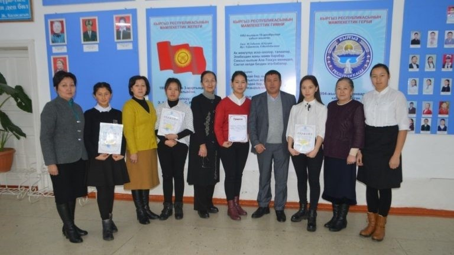

Мектептин жетишкен ийгиликтери.
Ак талаа районунда өткөрүлгөн предметтик олимпиаданын жалпы жыйынтыктын негизинде 2019-2020- окуу жылында Ж.Сатылганов орто мектебинин окуучулары 3 орунду камсыз кылды.
27-28-февралда 2019-2020 окуу жылында райондук предметтик олимпиада аяктады. Биздин мектептен 11-класстын окуучусу Бактыгүл Мирбекова биринчи орунду алды. 10-класстын окуучулары Бактыбеков Малик орус тилинен экинчи орун, Эшмухамбетов Элдан физика боюнча экинчи орунга ээ болду. Натыйжада, биздин мектептен үч окуучу республикалык олимпиадага катышууга мүмкүнчүлүк алышты

Мектепке бир нече уюмдардан инвестиция тарылып келинген жана эл аралык уюмдар менен иш алып баруулар жүргөн.
CIZ, Агахан фонду MSDSP KG,Корпус Мира, Бирге окуйбуз долбоору ж.б
Жетишкен ийгиликтер.
«Жыл мугалими 2015» кыргыз тили мугалими Казыбаева Гүлзат Муканбетовна шаардык денгээлде өткөрүлгөн кароо сынакта “Насаатчы мугалим ” наамына татыктуу болуп, шаардык мэриянын , шаардык кенештин Ардак грамотасына татыктуу болуп акчалай сыйлыкка ээ болду. “Жаш мугалим 2016” физика мугалими Эмил кызы Айзат шаардык деңгээлде өткөрүлгөн кароо сынакта “Үлгүлүү мугалим ” наамына татыктуу болуп ,шаардык мэриянын , шаардык кеңештин Ардак грамотасына татыктуу болуп акчалай сыйлыкка ээ болду.
«Жыл мугалими 2016» башталгыч класс мугалими Кыпчакова Зарина райондук, денгээлде откорулгон кароо сынакта 3-орунга татыктуу болуп, райондук мэриянын , райондук кенештин Ардак грамотасына татыктуу болуп акчалай сыйлыкка ээ болду .
«Жаш мугалим 2017» шаардык денгээлде откорулгон кароо сынагынан физика мугалими Райымкулова Бурулсун Райымкуловна “Эң мыкты жаш мугалим ” наамын ээлеп райондук мэриянын , райондук кенештин Ардак грамотасына татыктуу болуп, сыйлыкка ээ болду.
2015-2016-окуу жылында.
- “XXI— кылымдын интелектуалдарыбыз” аталышындагы ойлоп табуучулук боюнча 9-классынын окуучусу Мурат уулу Медер 1орунду камсыз кылып ,Чолпон –Ата шаарына барып республикалык деңгээлдеги сынакка катышып байгелүү орунду камсыз кылып келди.
- “Тарых жана маданият” жылына карата шаардык деңгээлде “Кыргыз салты кылымга ”аталышында семинар өткөрүлдү.
- Шаардык деңгээлде өткөрүлгөн олимпиададан орус тили сабагынан 10-классынын окуучусу Султанова Аяна 1-орунду камсыз кылып, облустук деңгээлден 3-орунду камсыз кылды
2016-2017-окуу жылында.
- Аскерге чейинки даярдоо сабагынан (Мекенге, патриоттуулукка даярдоо ) конкурсу Нарын шаарынан 3-орун
- Жоокер ыры кароо сынагынан 7а-классынын окуучусу Узак кызы Айсулуу Нарын шаарынан 2-орун
- “Мы за чистый город” шаардык деңгээлде өткөрүлгөн сынакта 1-орун
- “Жаш талант” кароо сынагынан“Манас” айтуу боюнча 8-классынын окуучусу Кубанычбек уулу Элдияр жана Камчыбек кызы Нуржаз 2 орун Обл . турга жолдомо алды.
- Областык денгээлде өткөрүлгөн “Илим жана техника 2016” интеллектуалдык конкурсунда 1-3-орунду камсыз кылды.
- “Ыйман, адеп жана маданият” жылына карата облустук деңгээлде “Өнүксө заман талабы -унутпайт салтты , кыргыз баласы ” аталышында ата-эне ,окуучу , мугалимдин катышуусу менен өткөрүлдү.
- Областык денгээлде өткөрүлгөн «XXI кылымдын Интеллектуалы» кароо сынагында физика сабагы боюнча, физика миугалими Б.Райымкулова тарабынан даярдалган сынакта 1 окуучу республикалык кароо сынакка жолдомо алып, байгелүү орунду камсыз кылышты.
- Райондук деңгээлде өткөрүлгөн олимпиадан орус тили сабагынан 11-классынын окуучусу Султанова Аяна 1-орунду камсыз кылып,облустук деңгээлден 4-орунду камсыз кылды . Райондук деңгээлде өткөрүлгөн олимпиадан география сабагынан 11-классынын окуучусу Бактыбек уулу Дастан 1-орунду камсыз кылып , райондук к деңгээлден 2-орунду ээледи.
- Облустук деңгээлден Бактыбек уулу Дастан 2-орунду Султанова Аяна 4-орунду ээледи.
- Жоокер ыры кароо сынагынан 7а-классынын окуучусу Узак кызы Айсулуу Нарын шаарынан 2-орун.
2017-2018-окуу жылында.
- Манас күнүнө карата “Сагынбай Орозбак уулунун 150 жылдыгына” карата иш чарага 9-класстын окуучулары “Манас таануу” сынактын облустук денгээлине катышып , байгелүү орундарды камсыз кылышты.
- Чыңгыз Айтматовдун 89 жылдыгына карата шаардык деңгээлде илимий – конференция өттү. Конференция райондук англис жана орус тили мугалимдердин катышуусунда.
- Шаардык деңгээлде өткөрүлгөн олимпиададан орус тили сабагынан 11-классынын окуучусу Султанова Аяна 1-орунду жана география сабагынан 11-классынын окуучусу Бактыбек уулу Дастан 1-орунду камсыз кылып , облустук деңгээлдеги болуучу олимпиадага жолдомо алышты.
- Мектепте окуу- тарбиялоо процессинин жүрүшүнө шарт тузүлгөн: азыркы тапта 17 класс кабинетинде окуу жүргүзүлөт. 1 методикалык кабинет, 1 ресурстук борбор,(англис тили), 1 информатика кабинети, 2 лабораториялык кабинети,(химия, физика), 1 мектеп парламенти кабинети, 1 соц.педагог жана ИДН кабинети, 1 мед.кабинет, спорт зал, китепкана, окуу залы, 480 сааттык программа үчүн атайын кабинет, “Бирге окуйбуз” кабинети, 80 орунга ылайыкташкан ашкана, 2 тех. кызматкерлер үчүн көмөкчү кабинет, 1 теннис залы, спорт аянтчасы, жашылдандыруу жана көрктөндүрүүчү бакчасы, 1 АЧД аянтчасы бар.2019-2020-окуу жылында 24 класс комплект ачылып, жалпы 605 окуучу билим алат.